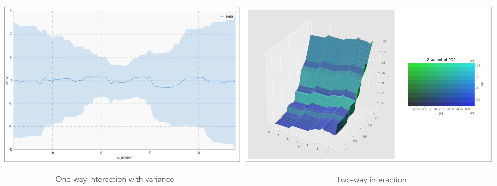

Gallery¶
Model Abstraction¶

InMemory Model¶
Deployed Model¶
- python deployed model: https://github.com/datascienceinc/Skater/tree/master/examples/python-deployed-model
- r deployed model: https://github.com/datascienceinc/Skater/tree/master/examples/r/deployed_model
- pre-trained/canned model: https://github.com/datascienceinc/Skater/tree/master/examples/third_party_model
Interpretation Examples¶
Global Interpretation¶
{kind=link}
Model Agnostic Partial Dependence Plot(PDP)

Model Agnostic Feature Importance
Local Interpretation¶

- Local Interpretable Model Explanations(LIME)
- DeepInterpreter for interpreting DNNs
- epsilon-Layer-wise Relevance Propagation(e-LRP): only for image currently
- Integrated Gradient(IG): image and text


- Image Interpretability
- Image Classification:
- https://github.com/datascienceinc/Skater/blob/master/examples/image_interpretability/image_interpretation_example_cats_dogs.ipynb
- https://github.com/datascienceinc/Skater/blob/master/examples/image_interpretability/imagenet_adv_inceptionv3_tensorflow.ipynb
- https://github.com/datascienceinc/Skater/blob/master/examples/image_interpretability/mnist_cnn_keras.ipynb
- https://github.com/datascienceinc/Skater/blob/master/examples/image_interpretability/mnist_mlp_tensorflow.ipynb

- Text Interpretability with Integrated Gradient
{kind=link}